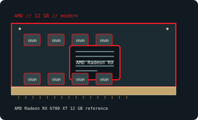

[ AMD // INDIVIDUAL GPU RECORD ]
AMD Radeon RX 6700 XT 12 GB reference
2021; RDNA 2 Navi 22 XT; 2,560 stream processors (40 CUs).

Recorded specifications
| Catalog identity | AMD Radeon RX 6700 XT 12 GB reference |
|---|---|
| Model-specific specification | 2021; RDNA 2 Navi 22 XT; 2,560 stream processors (40 CUs); 12 GB GDDR6, 192-bit; PCIe 4.0 x16; 230 W; reference 8-pin + 6-pin. |
| Vendor-first catalog | AMD vendor directory |
| Model-family index | AMD / ATI vendor directory |
Compatibility and maintenance
Different from RX 6700 and RX 6750 XT refresh; verify device ID before firmware work. Check both feeds and partner-card clearance.
Sources & further reading
- AMD Radeon RX 6700 XTModel/family technical or historical reference; confirm the exact board revision and OEM label.